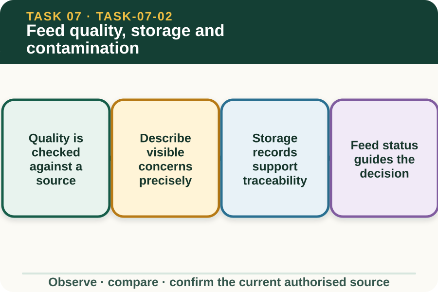
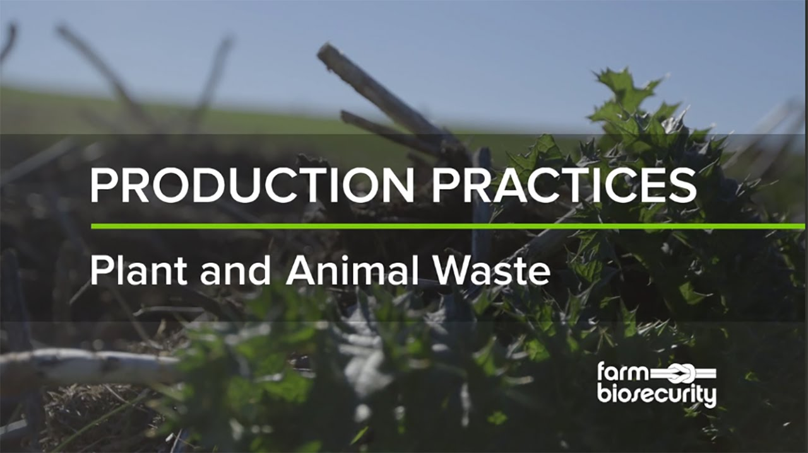

Learning purpose
Recognise observable quality concerns and choose a safe report-and-hold response.
Task 7 · Lesson 2 of 4
Recognise observable quality concerns and choose a safe report-and-hold response.
Learning purpose
Recognise observable quality concerns and choose a safe report-and-hold response.
Success criteria
Learning boundary
Supplementary learning and formative practice only. Current RTO assessment, local procedures and authorised supervision control real work.

Feed quality cannot be decided from a single visual impression. The approved feeding plan, supplier information, storage records and current workplace acceptance criteria define what is expected for the specific material.
A learner compares identifiers, packaging or storage condition, date information and observable material features with those sources. Any unresolved difference is reported before the material is used.
Useful observations identify where the material was found, which lot or container is involved and what can be seen, smelled or reliably measured under the authorised check. Avoid tasting or unsafe close inspection.
Terms such as spoiled, toxic or safe are conclusions unless the current source or authorised reviewer confirms them. Record colour change, damaged packaging, moisture evidence, foreign material or unusual odour only when actually observed.
Storage information can include material identity, lot, receipt or opening details, location, condition checks and stock movement. These fields help authorised staff find affected material and compare it with current source requirements.
Moving unverified material to a new container or location can break traceability. The learner should follow the local hold-and-report process rather than improvising storage or disposal actions.
A possible contamination pathway may involve pests, water, chemicals, waste, damaged packaging, transport or shared equipment. Evidence of a pathway justifies review but does not automatically confirm contamination.
The authorised person decides status and response using current workplace, supplier and professional information. This site does not provide disposal, cleaning, testing or substitute-feed instructions.
Fictional worked example
Observed evidence: In fictional Cedar Ridge Store, Amira finds two sealed containers labelled Material Q from the same recorded lot. One outer package has a water stain and the storage log has no condition entry after a roof leak report. Decision and reason: Amira cannot label the contents safe or contaminated from the outer stain alone. Safe action: She does not use or relocate the containers, records the identifiers, location, visible stain and missing check, and notifies the supervisor. Result: The authorised reviewer checks the current sources. Next check or record: Amira records the confirmed status without suggesting disposal or replacement.
Report-and-hold means the learner does not use uncertain material while its identity or status is unresolved, and immediately refers the evidence through the workplace process. The exact physical controls remain locally defined.
This decision protects traceability without requiring the learner to know the cause. It is especially important when an old label, damaged package, unmatched lot or missing record makes the approved status unclear.
Once an authorised decision is made, the record should show who reviewed the evidence, the source used, the confirmed status and any direction relevant to the learner. Corrections must preserve the original discrepancy.
Fictional website exercises help practise these decisions but are not feed-safety certification, workplace release records, authorised livestock feeding plans or formal evidence of practical competence.

External media loads only after you choose it.
Source-linked video
Why watch: Notice how feed and water quality fit inside a broader prevention system.
Watch for: Which visible feed, water or storage concern should trigger a report-and-hold response?
Formative practice
Each option explains the consequence. These answers save only on this device.
Written application
Apply and keep a learning record
Compare a fictional package label, lot list, location card and storage log. Mark matching evidence and one unresolved concern, then write a concise supervisor report. Do not advise use, testing, cleaning, disposal or substitution.
Learning record: A supplementary storage-traceability audit and evidence-based report for teacher feedback.
Lesson responses and the activity are formative learning only. Formal sufficiency and competence remain with the current RTO process.
Source basis: AHCLSK229 Release 1 requirements to check feed, maintain safe work and storage areas, minimise waste, follow biosecurity policy and report abnormalities. Current plan, supplier information, workplace acceptance criteria and supervisor direction control material status and response.